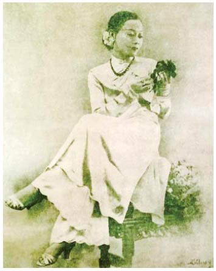

Máu trắng nhợt nhỏ giọt từ ngón tay của nam nhân ngư khi hắn cắt dây trói cho Nerron. Hắn đã tự tróc hết vảy trên cánh tay để thoát thân. Vài mẩu thịt màu xanh ô liu của hắn vẫn còn dính trên bánh xe ngựa, vậy mà mặt hắn không hề biến sắc.
Dĩ nhiên là họ đã bị tước hết vũ khí.
Bị lừa bởi một tên hoàng tử ngu hơn bất kỳ con ngựa nào người từng cưỡi, Neron.
Họ đã trông thấy lâu đài từ đằng xa. Lão lùn đã mang cái xác của Guismund đi. Nerron phát điên vì giận dữ khi chĩa ống nhòm về phía tháp canh, nơi đáng lẽ đang diễn ra cuộc trao đổi. Một đống đá chất cao, trông có lẽ là mộ của gã khổng lồ con, phía trước là một vài cái xác. Gã không thể nhận ra đó là ai, nhưng gã khổng lồ con đang lom khom phía trên thì không lẫn vào đâu được. Hắn là một gã khổng lồ khá tráng kiện. Chuyện gì đã xảy ra chỗ tay đao phủ của Vua Gù?
“Thấy Louis không?” Nerron mừng vì nỗi căm ghét trong giọng nam nhân ngư không nhắm vào gã.
Gã lắc đầu.
“Ta muốn nghe tiếng cổ hắn gãy răng rắc...,” Eaumbre thì thầm. “Hoặc bóp cổ cho đến khi bộ mặt ngu ngốc của hắn xanh lè như màu bầu trời.”
Có những nam nhân ngư bỏ ra hàng năm trời chỉ để săn lùng một kẻ đã từng sỉ nhục hoặc lừa đảo họ. Eaumbre đã rất kiên nhẫn với Louis. Nhưng Nerron chẳng quan tâm tên hoàng tử còn sống hay đã chết. Tất cả những gì làm gã hứng thú là liệu Reckless có nằm trong số những xác chết không. Dù vậy không đáng phải chiến đấu với một gã khổng lồ chỉ để biết được điều đó.
Gã nhét ống nhòm trở lại vào thắt lưng.
Eaumbre quan sát đống đổ nát và tòa lâu đài trông giống như một vương miện bằng đá đặt trên núi. “Kẻ Tàn Sát Phù Thủy sở hữu không chỉ cây nỏ thần mà còn nhiều báu vật khác, đúng không?”
“Có lẽ.”
Eaumbre sờ cánh tay đầy thương tích. “Nếu Louis ở đó, hắn thuộc về ta,” hắn thì thầm.
“Còn nếu không?”
Nam nhân ngư nhe răng ra. “Hy vọng ta sẽ tìm thấy thật nhiều vàng để được an ủi phần nào.”